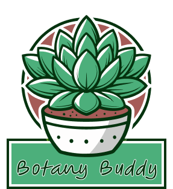

Botany Buddy
UI Case Study | Native App - iOS and Android
The Process
-
Define
I conceived Botany Buddy to solve common plant care challenges, defining its core purpose as a native app providing personalized care, tracking, and diagnosis for plant owners of all levels.
-
Research
Through thorough research, including competitive analysis I identified user needs for plant identification, care reminders, and health diagnosis, which directly informed the app's key features and intuitive user experience.
-
Design
I crafted the entire design, from user flows and wireframes for both iOS and Android to the comprehensive style guide and mockups, creating an accessible and engaging interface for plant care.
-
Test
To validate the design, I conducted A/B testing on key features and performed user testing to gather direct feedback, ensuring the app's effectiveness and user-friendliness through iterative refinement.
The Objective
I came up with the concept, created the logo and the overall design for Botany Buddy. This native iOS and Android app helps plant owners by providing personalized care tips, tracking routines (like watering and fertilizing), and diagnosing health issues through visual identification.
Who
Plant enthusiasts of all experience levels - from beginners needing help with plant identification and care to experienced gardeners monitoring plant health and tracking routines.
What
Users will:
- Identify plants by taking photos
- Receive care tips based on plant type
- Track plant health
- Diagnose issues by taking photos
When
Users will access Botany Buddy when they need plant care assistance.
- During morning checks
- After buying plants
- Or after noticing distress signs
Where
- Primarily at home while caring for plants
- Also on-the-go when purchasing plants
- Or outdoors while checking garden or wild plants.
Why
This native mobile app offers quick camera access for plant identification, offline use for outdoor settings, and push notifications for care reminders.
Userflows
Wireframes
iOS
(Scroll to view more)
Android
(Scroll to view more)
Style Guide
COLORS
(Scroll to view more)
LOGO
Typography: Figma Hand Regular pt 30
Mockups
iOS
(Scroll to view more)
Android
(Scroll to view more)
Conclusion
Developing Botany Buddy provided valuable insights into designing for a specific user need: plant care. This project highlighted the importance of combining practical tools, like care reminders and visual diagnosis, with user-friendly features such as plant identification. I learned how to create an intuitive experience that empowers users to confidently care for their plants, regardless of their experience level.
The app's impact lies in its potential to make plant care more accessible and enjoyable, fostering a deeper connection between users and their greenery. By addressing common pain points, Botany Buddy simplifies a traditionally complex task.